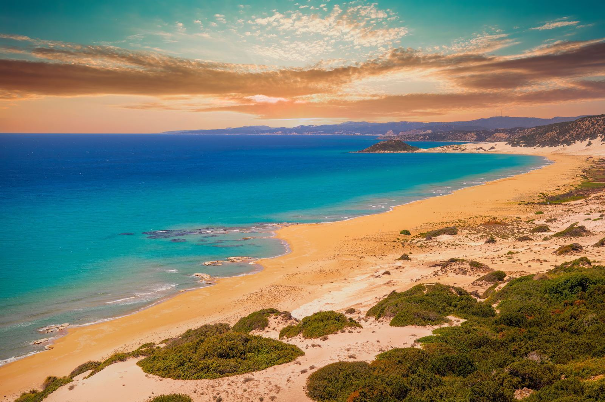
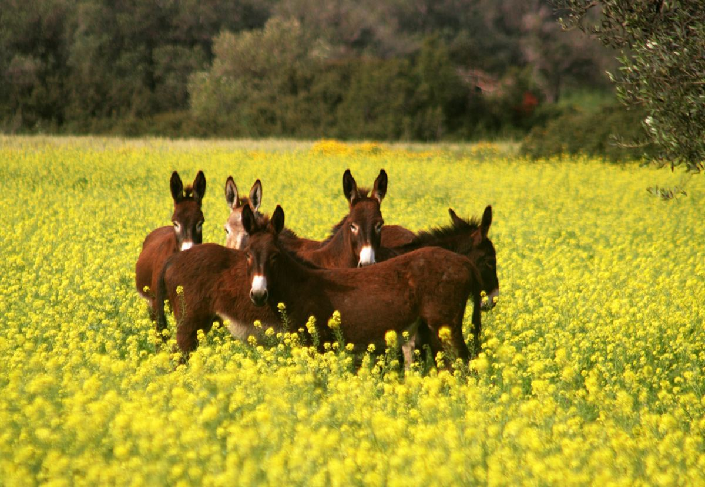
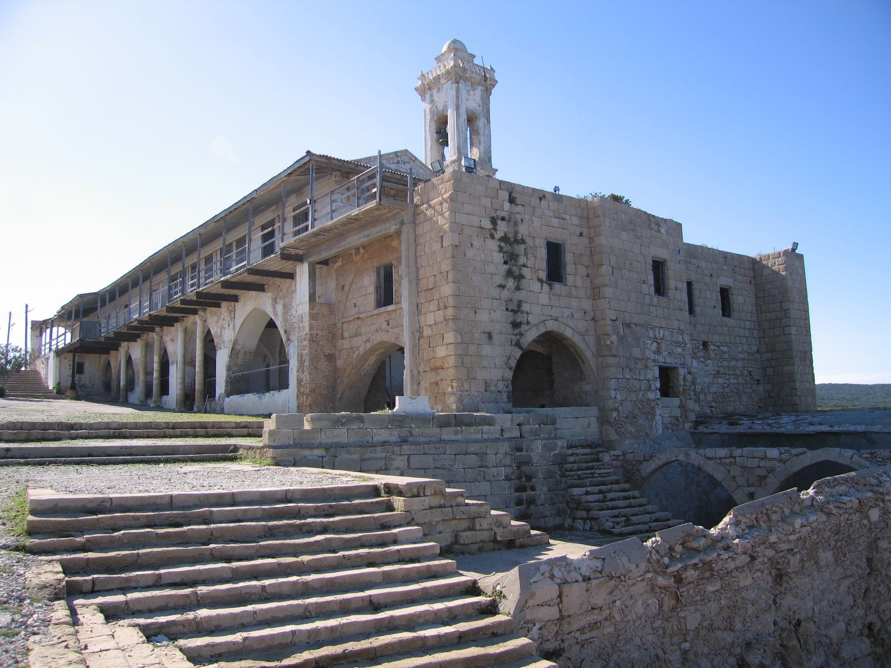
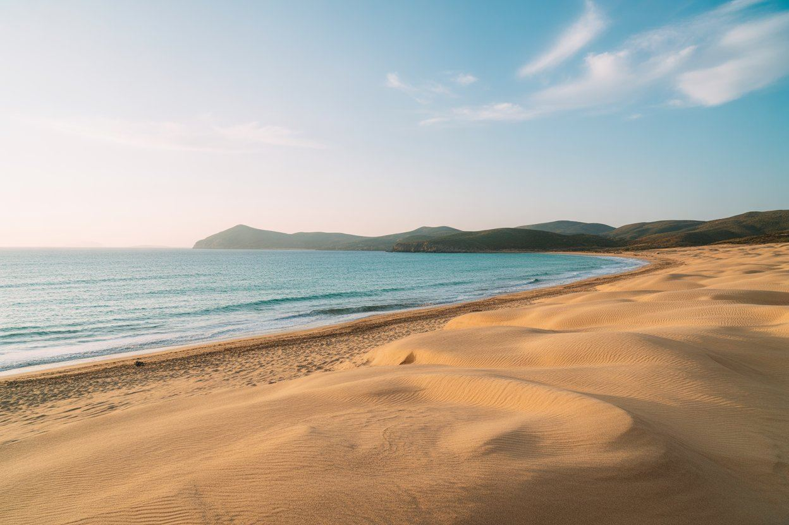
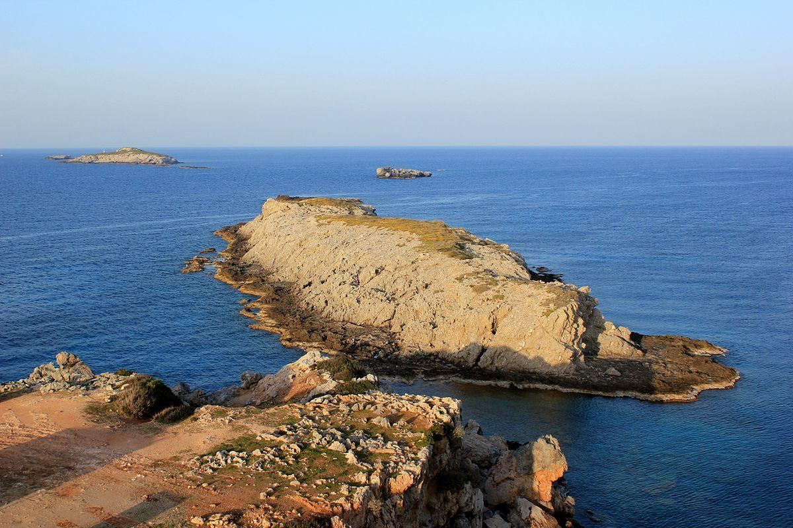

The Karpaz Peninsula's wild donkeys aren't actually wild in the strictest sense — they're descendants of farm donkeys abandoned decades ago as tractors took over their work. They're now a protected symbol of the peninsula and roam freely across the national park.
Interactive Route Timeline
Track your coordinates along the remote peninsula highways using our live mapping plugin loop.
Route Itinerary
Follow the timeline in order, but keep the route flexible depending on time, weather and opening hours.
Dipkarpaz (Rizokarpaso in Greek) sits at the start of the Karpaz Peninsula and remains one of the few villages on the island with a historically mixed Greek and Turkish Cypriot community.
🚗 15 mins drive (10.5 km) via coastal road

Karpaz Scenic Drive
The drive itself is part of the experience. Open roads, quiet views and changing landscapes make this route feel different from the city-based pages.
The road out of the village narrows as it enters the peninsula proper, with open farmland gradually giving way to pine forest and increasingly wild, undeveloped coastline on both sides.
🚗 12 mins drive (8 km) entering the National Park

Wild Donkey Area
A memorable stop for many visitors. The donkeys are strongly associated with the Karpaz experience, but visitors should observe respectfully and avoid careless feeding.
The peninsula's donkeys descend from farm animals abandoned decades ago as tractors replaced them for fieldwork. Now protected within the national park, they're famously unbothered by passing cars.
🚗 10 mins drive (7.5 km) on unpaved roads

Apostolos Andreas Monastery
The cultural and spiritual anchor of the route. It gives the long drive a meaningful destination and adds history to the nature-focused route.
Apostolos Andreas Monastery, dedicated to St. Andrew the Apostle, is one of the most significant pilgrimage sites in Cyprus for Orthodox Christians, historically drawing visitors from across the island each year.
🚗 5 mins drive (3 km) back towards the coast

Coastal View / Beach Stop
Add a beach or coastal pause depending on time and road conditions. This keeps the route flexible and gives visitors a chance to rest before the final stretch.
The peninsula's beaches, including the well-known Golden Beach further along the coast, are important nesting grounds for loggerhead and green sea turtles during the summer months.
🚗 15 mins drive to the absolute tip
📸 Best Photo Spot

Zafer Burnu Direction / Far-East Viewpoint
End with the feeling of reaching the edge of the island. Even if visitors do not continue all the way, the far-east landscape gives the route its strongest memory.
Zafer Burnu (Cape Apostolos Andreas) marks the easternmost tip of Cyprus — from here there's nothing but open Mediterranean until the coast of Syria, roughly 100km away.
Practical info
Start early; this is the longest route in the set.
Fuel up before going deep into the peninsula.
Bring water, snacks, sun protection and a charged phone.
Drive slowly around animals and narrow rural roads.
Insider tip
Start your journey to the Karpaz Peninsula early in the morning. The roads are quieter, temperatures are cooler, and you'll have a better chance of enjoying Golden Beach before it becomes busier later in the day.
🎧 Listen to the Local Audio Guide:
Read the transcript
Hey there, explorer. Here is your Karpaz insider secret: Do not waste your money buying feeding carrots early in Dipkarpaz village. Keep driving until you reach the actual national park entrance gates. The wild donkeys here will practically stick their heads into your open car windows if you have treats ready. Just remember—they actually prefer fresh apples over dry bread!